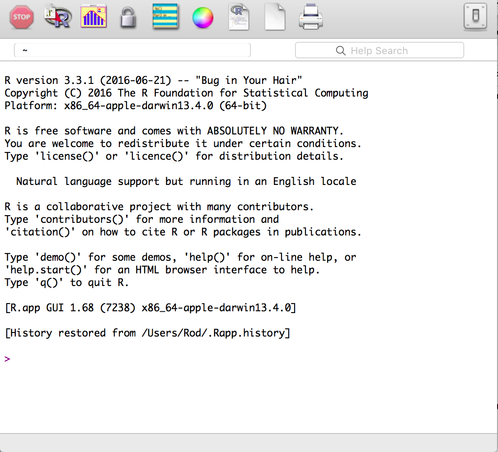
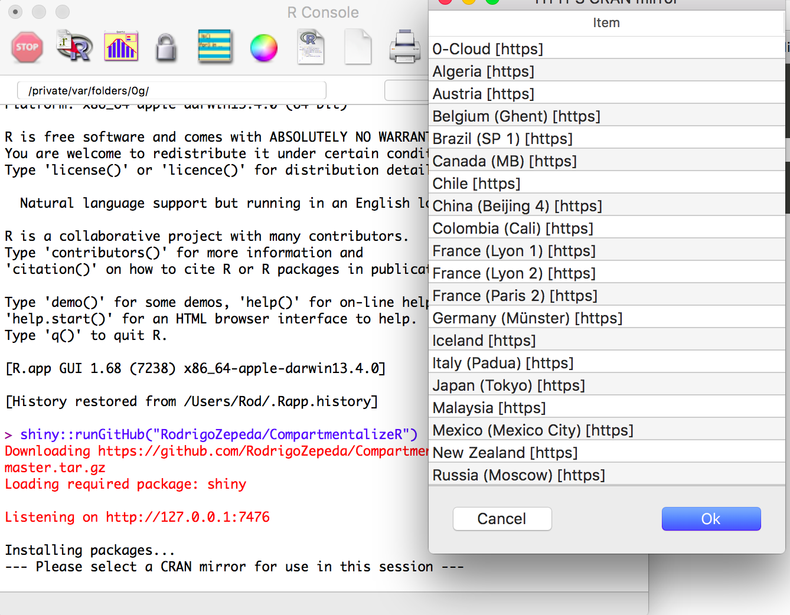
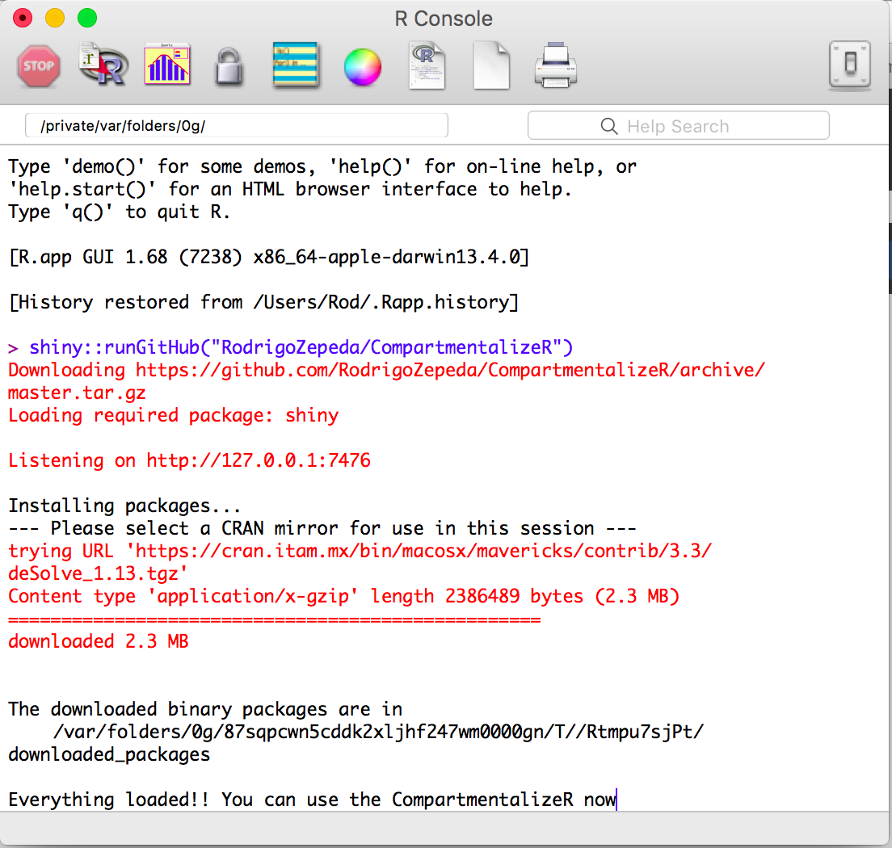

Installation
For installing the program there are two options: either you are an R newbie or you already know your way around. Choose the option that best suits you.
I am an R Guru
You need to install the following libraries: deSolve, shiny, ggplot2, reshape, markovchain, and GillespieSSA. For deploying the App you can download it and run it with shiny::runApp or run it from Github:
shiny::runGitHub("RodrigoZepeda/CompartmentalizeR")I am an R newbie
For using this program you need to download R from its site. Follow their instructions. Once R has been installed it will look like this (it varies from platform to platform):
Before using the programme you need to install an additional package called shiny. Type into the R console install.packages("shiny") and press the key Enter. You might need to select a CRAN mirror: choose whichever you like.
After installing type the following code to start using CompartmentalizeR: shiny::runGitHub("RodrigoZepeda/CompartmentalizeR")
A window with the software will deploy. Don’t use it just yet: check the R window as it might be installing everything you need. You might need to select a CRAN mirror: choose whichever you like.
A message will tell you when you can use the software.
If you ever want to use the program again you’ll just need to type in the R console the following code:
shiny::runGitHub("RodrigoZepeda/CompartmentalizeR")No more installation will be required.
REMEMBER: By installing this way, the program will only work with an Internet Connection